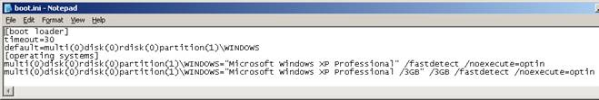
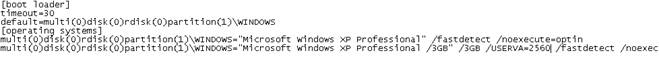

Increasing the virtual memory available to the Agent Server
The Agent Server and Agent
Server Service processes can use up to 3GB of virtual memory on 32 bit
Windows XP and Server 2003 and up to 4GB on certain 64 bit operating systems.
Previously, these processes were limited to only 2GB.
This feature allows users to extend their WGP file
configuration and is particularly useful when your current Agent Server
process is approaching the 1.6GB virtual memory limit, as measured by
Performance Monitor (NOT Task Manager!).
Implementation on a 32 bit operating system:
32 bit operating systems have a maximum of 4GB of
addressable memory space.
By default, Windows allows only 2GB per process
and uses the other 2GB for Windows itself.
To change this default, you need to do the following:
On 32 bit Windows Vista
and later versions of Windows:
In other words specify the following command: BCDEdit /set [{ID}] increaseuserva Megabytes, where:
The
/set command sets a boot entry option value in the boot configuration
data store.
The
{ID} is the GUID that is associated with the boot entry. If you
do not specify an {ID}, the command modifies the current operating system
boot entry.
The
increaseuserva Megabytes specifies the
amount of memory, in megabytes, that is available per proceess. This variable
can have any value between 2048 (2 GB) and 3072 (3 GB) megabytes in decimal
notation. Windows uses the remaining address space (4 GB minus the specified
amount).
Using
the full 3 GB for this option CAN potentially cause the Agent Server
(and/or other Windows applications) not too work, if Windows requires
MORE THAN 1GB for dealing with this process.
For instance: if the configuration of the Agent Server
is such that the size of network packets between Adroit client and server
components are too large, then Windows requires more memory for itself
to handle the networking layers.
In these cases, limit the amount of additional memory
available to the process and hence increase the amount of memory available
to Windows.
On 32 bit Windows Server
2003 and Windows XP, use the /3GB and optionally /USERVA
parameters in the boot.ini file, which are ONLY valid for 32-bit
versions of Windows on computers with x86 or x64-based processors.
We strongly recommend that you add a new profile for 3GB operation as opposed
to amending the one and only default profile.
For instance, in the modified boot.ini file below, the
last line allows the user to select "Microsoft Windows XP Professional
/3GB" in addition to the default profile:

The /3GB profile allows individual processes to
use up to 3072 MB of virtual memory. The remaining 1GB is reserved
for Windows.
Note: Should you wish this /3GB profile to be
the default profile you need to make sure that it is the first entry under
[operating systems]
However, this /3GB profile above CAN potentially
cause the Agent Server (and/or other Windows applications) not too work,
if Windows requires MORE THAN 1GB for dealing with this process, for instance:
if the configuration of the Agent Server is such that the size of network
packets between Adroit client and server components are too large, then
Windows requires more memory for itself to handle the networking layers.
In these cases, you need to add the /USERVA switch
to the /3GB profile to limit the amount of additional memory available
to the process and hence increase the amount of memory available to Windows.
The usage of this switch is demonstrated in the following boot.ini file:

In this boot.ini file, the switch /USERVA=2560 has been
added to further instruct Windows to limit the virtual memory per process
to 2560 MB. The above leaves 1.5 GB for the Windows operating system
to allow Windows to operate properly.
Implementation on a 64 bit operating system
On 64-bit versions of Windows
Server 2003/2008, the system automatically expands the virtual address
space available to 32-bit user-mode programs as needed without the /3GB
boot parameter.
On Windows Server 2003
RTM (without Service Pack 1), these 32-bit programs can access up to 3
GB of virtual address space.
On Windows Server 2003
with Service Pack 1, they can access up to 4 GB of virtual address space.

 Click
for more details:
Click
for more details: